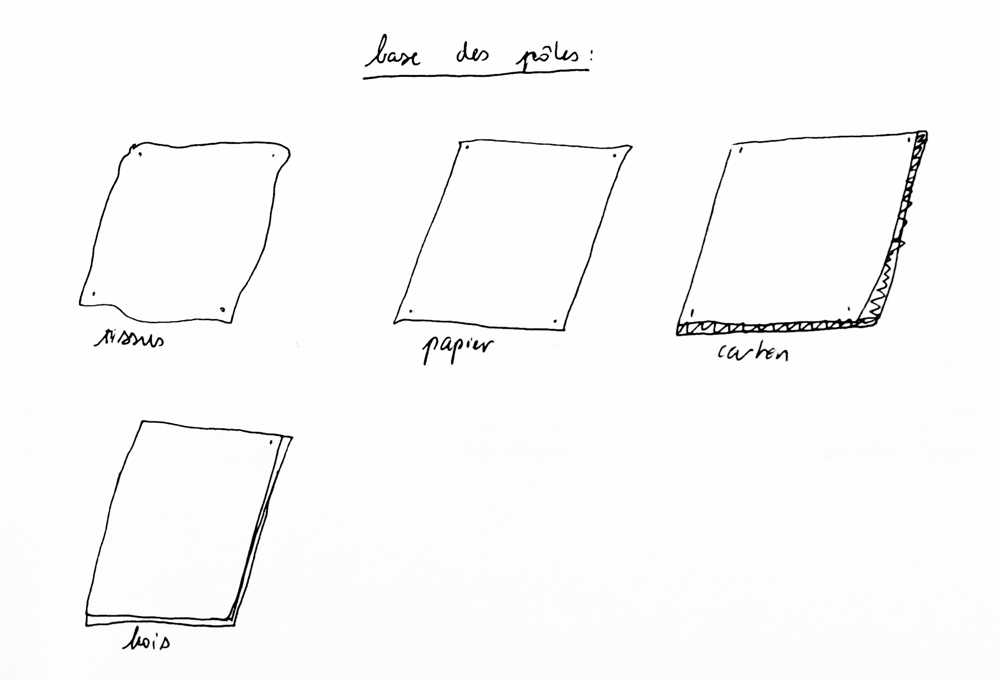
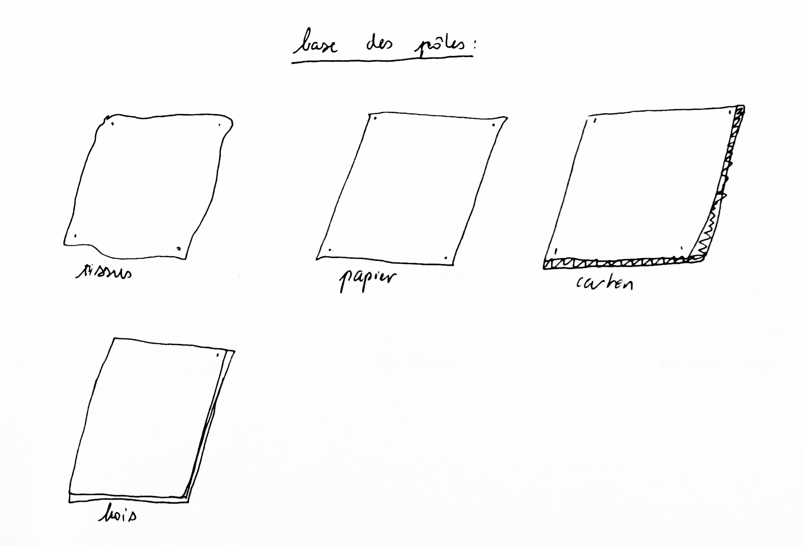
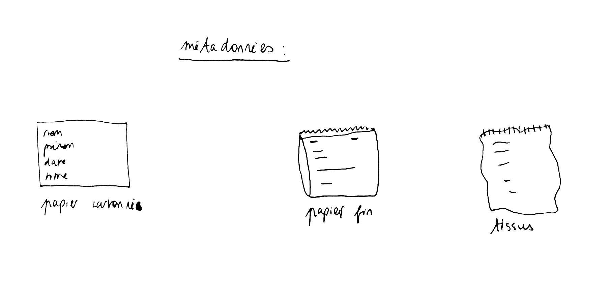
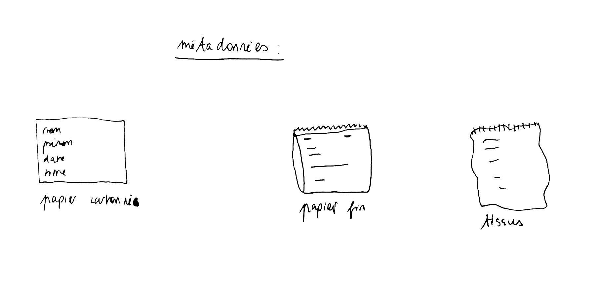
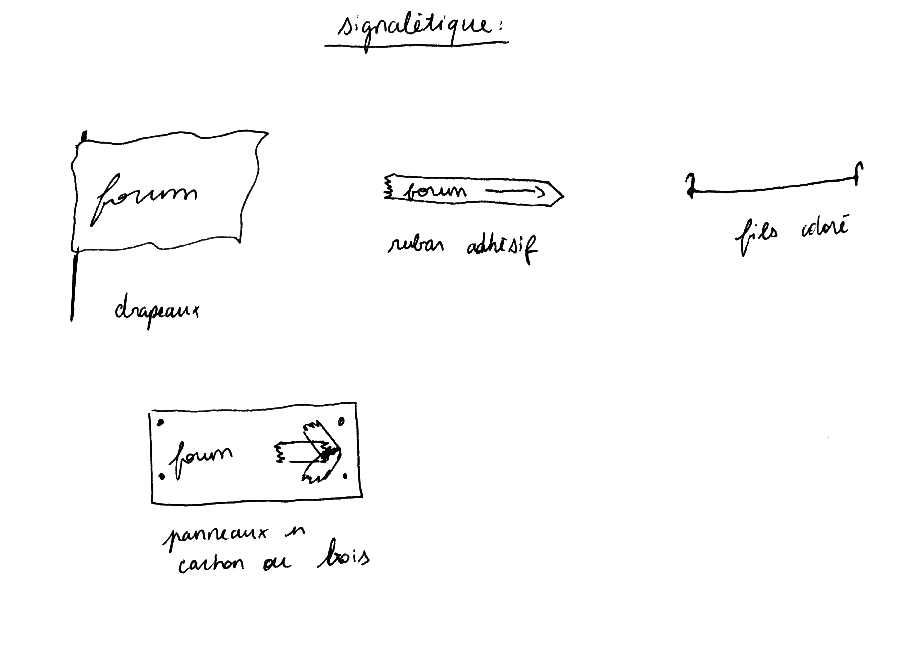
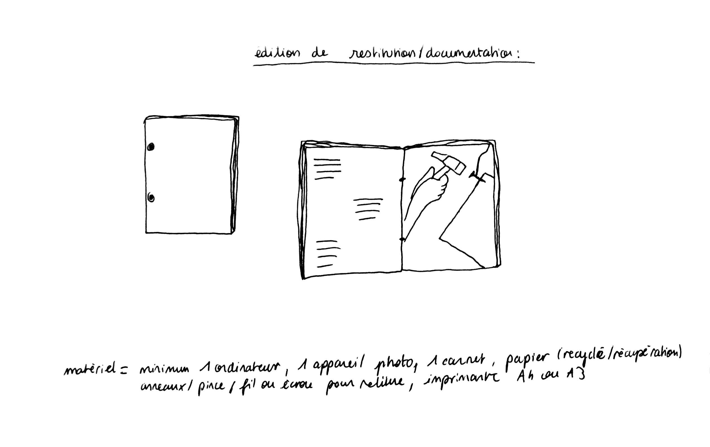
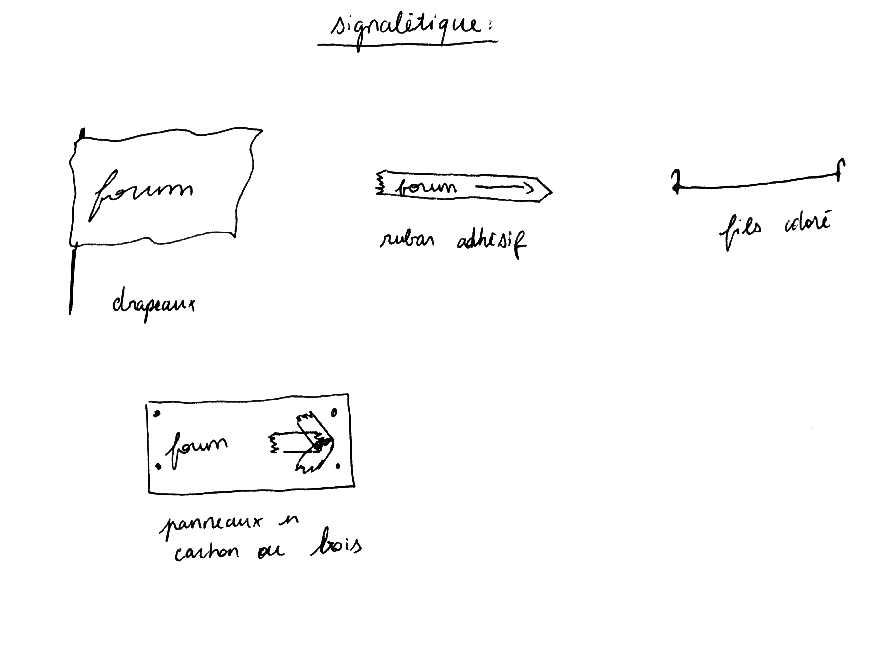
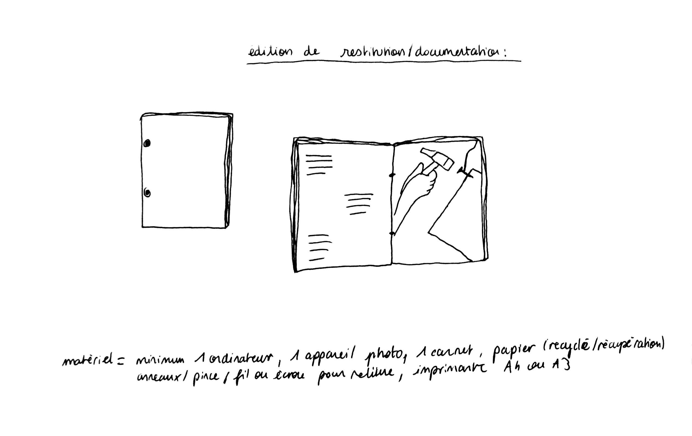

Résumé du projet
Cette résidence a pour but de faire découvrir aux enfants la structure et le fonctionnement des réseaux sociaux, et de les amener à développer un regard critique face aux outils numériques. Il s’agit de leur donner les clés pour imaginer et fabriquer leur propre réseau en s’inspirant de communautés ancrées dans leur territoire.
Dans ce jardin poussent des idées, des savoirs, mis en réseau pour réinventer notre façon de partager, d’habiter.
Un jardin est un endroit où prennent racine des plantes, un endroit que l’on organise comme on veut, dont on prépare la terre, et qu’on entretient pour y faire exister des choses vivantes.
Un hyperlien est un élément numérique qui permet d’accéder à un document situé autre part dans le réseau, un moyen de mettre en lien, de rassembler des contenus.
Cette résidence s’articulera en plusieurs parties ; nous allons d’abord nous interroger sur nos usages du numérique sous la forme d’un grand jeu. Les enfants imagineront ensemble les objets graphiques du jeu, reposant sur des éléments constitutifs des réseaux sociaux. L’objectif est de les amener à échanger leurs regards critiques vis-à-vis de ces outils.
Puis, nous découvrirons des textes et nous irons à la rencontre de personnes qui partageront leur expérience pour comprendre les liens entre les communautés autogérées et les premières utopies du web.
À partir de ces discussions, une phase de création sera lancée ; l’idée est d’imaginer un espace physique où partager un savoir. L’architecture de cet endroit sera pensée selon ce qui s’y trouve : comme la structure d’un réseau. La fabrication, faite à l’aide de matériaux de récupération, sera aussi l’occasion de s’interroger sur les questions graphiques de signalétique et d’identité visuelle. L’objectif est d’utiliser des outils accessibles qui permettront à chaque personne d’ajouter sa pierre à l’édifice et laisseront la possibilité à la structure de perdurer et évoluer après la période de résidence.
J’envisage une restitution sous la forme d’une édition accompagnant une visite guidée du réseau. La documentation étant une pratique inhérente aux cultures libres et open-sources ; l’idée est aussi d’apprendre à transmettre. De la concrétisation du jeu, jusqu’à la mise en place du jardin d’hyperliens, les enfants seront invités à photographier, prendre en note et dessiner les différentes étapes de découverte, d’imagination et de fabrication.
Parcellée dans des immeubles, des hangars, des bureaux. La frustration d’une existence numérique dont je n’ai pas le contrôle grandit. J’aimerais pouvoir ouvrir la boîte.
Transformer ces lieux en invitation à se perdre, en un rond-point communiquant dans d’autres espaces indépendants et multiples, circulant chez des amis qui ont construit pour cabane des présentoirs, des classeurs, des livres interminables, des habitations qui laissent entrevoir les épaisseurs de tapisserie.
Construisons nos cabanes en lieux d’émancipation, où la temporalité nous appartient, en lieux de parole, de transmission, de paresse.
Liste de matériel (provisoire)
Feutres noirs, feutres peinture type posca, papier coloré et calque, papier grand format, imprimante, appareil photo x2, ordinateur x2, carton, bois, tissus, terre/argile, ruban adhésif repositionnable, ruban adhésif coloré, ciseaux, imprimante traçeur, fil de couleur, papier d'imprimante thermique, projecteur, écran, imprimante thermique, aimants, tableau, colle pour tissus, colle à papier, outils gravure/céramique, post-it, clous, piquets, écrous, agrafes, agrafeuse, vis.


 

 

 



| durée totale | nombre de sessions | nombre d'enfant | matériel (ordinateur + appareil photo à toutes les séances sauf la dernière) | lieu | date envisagée | date convenue | |
| Rencontre avec les enfants, présentation de mon travail, présentation du projet | 14h45-16h | 1 | classe entière | projecteur ou écran | salle de classe | 11/03 | |
| Explication de l’outil de documentation. Premier test sous forme d'autoportrait collectif. | 10h-12h (15min de récréation) | 1 | 5 groupes | ordinateurs + appareil photos | salle informatique + imprimante | 12/03 | |
| Discussion, questions réponses pour découvrir leur rapport au numérique | 8h45-11h45 (15min de récréation) | 1 | classe entière | projecteur | salle de classe | 13/03 | |
| temps de recherche et création à distance | |||||||
| Dessin des personnages du jeu | 8h45-11h45 (15min de récréation) | 1 | demi groupe | feutres colorés + papier | salle de classe | 10/04 | |
| Déclinaison des dessins sur les supports | 8h45-16h | 1 | 5 groupes | tissus récupération + feutre peinture pour tissus | salle de classe | 11/04 | |
| Jeu, puis discussion critique | 14h-16h dont 30min trajet | 1 | classe entière | fil/ruban coloré | espace extérieur (city-stade ou salle de sport) | 12/04 | |
| temps de recherche et création sur place | |||||||
| Lecture de textes + écriture en cut-up de "condition générales d'utilisation" à partir des textes | 2h | 1 | 4 groupes (30min par groupe) | Papier + crayons, ciseaux, ruban adhésif, papier grand format | salle de classe | 15/04 | |
| Rencontre avec un/une artiste des environs | 3h15 | 1 | classe entière | à définir | à définir (si déplacement peut-être besoin de parents accompagnateurs·ices) | 16/04 | |
| Première liste de contenus à (im)planter dans le jardin | 2h15 | 4 groupes (30min par groupe) puis classe entière (15min) | tableau ou projecteur ou écran, papier, crayons, aimants, stylos effaçables | salle de classe | 17/04 | ||
| temps de recherche et création à distance | |||||||
| Écriture/Dessin/Photographies: Premières sessions de réalisation des contenus | 2h+2h ou 1h+3h | 2 | 4 groupes (30min par groupe x2) | ordinateur, appareil photo, imprimante, stylo peinture, colle à tissus, colle à papier, papier, carton, tissus, argile, outils céramique, imprimante thermique | salle de classe | 15/05 +16/05 | |
| Cartographie du jardin à partir d'un plan imprimé et d'éléments modulables | 2h15 | 1 | 4 groupes (30min par groupe) puis classe entière (15min) | Papier, ruban adhésif repositionnable | salle de classe | 17/05 | |
| temps de recherche et création sur place | |||||||
| Conception & sélection de pictogrammes pour la signalétique | 2h | 1 | 4 groupes (30min par groupe) | tableau, aimants, feutres colorés, papier | salle de classe | 21/05 | |
| Déclinaison des pictogrammes sur les supports de signalétique | 2h | 1 | 4 groupes (30min par groupe) | ruban adhésif, stylo peinture, tissus, carton ou bois, fils de couleur | salle de classe | 22/05 | |
| Production & finition des contenus du jardin | 2h | 1 | 4 groupes (30min par groupe) | ordinateur, appareil photo, imprimante, stylo peinture, colle à tissus, colle à papier, papier, carton, tissus, argile, outils céramique, imprimante thermique | salle de classe | 23/05 | |
| Préparation de l’espace forum du jardin | 2h | 1 | 4 groupes (30min par groupe) | Post-it, papier, système de reliure, ruban adhésif, feutre, bois, rouleau de papier thermique | salle de classe | 24/05 | |
| temps de recherche et création sur place | |||||||
| Assemblage de la structure du jardin & installation de la signalétique et des contenus | 2h+2h | 2 | 4 groupes (30min par groupe) // 2 groupes (30min par groupe) puis classe entière | clous, vis, piquets, bois, tissus, carton, papier, argile/terre | espace dédié à l’installation | 3/06+4/06 | |
| Relecture collective, mise en page et façonnage de l'édition de documentation | 2h+2h ou 1h+3h | 2 | 4 groupes (30min par groupe) // 4 groupes (30min par groupe) | projecteur ou écran, ordinateur, imprimante, papier, système de reliure | salle de classe | 5/06+6/06 | |
| Restitution ouverte au public sous forme de visite guidée | 2h | 1 | classe entière | / | espace dédié à l’installation | 7 ou 14/06 |